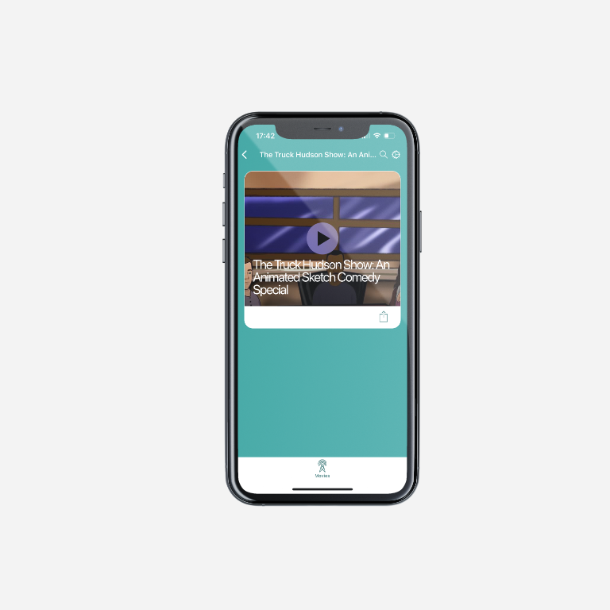
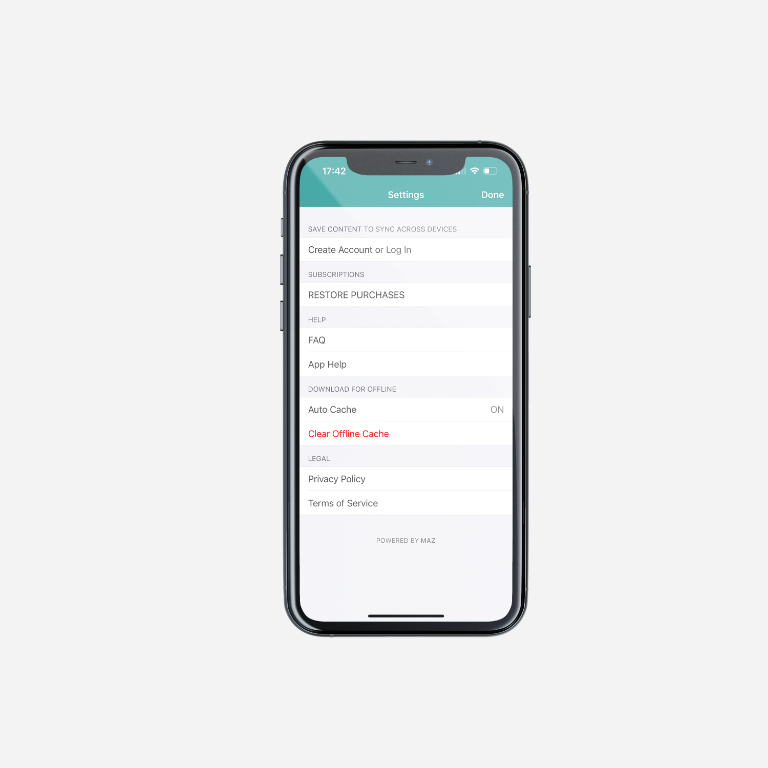
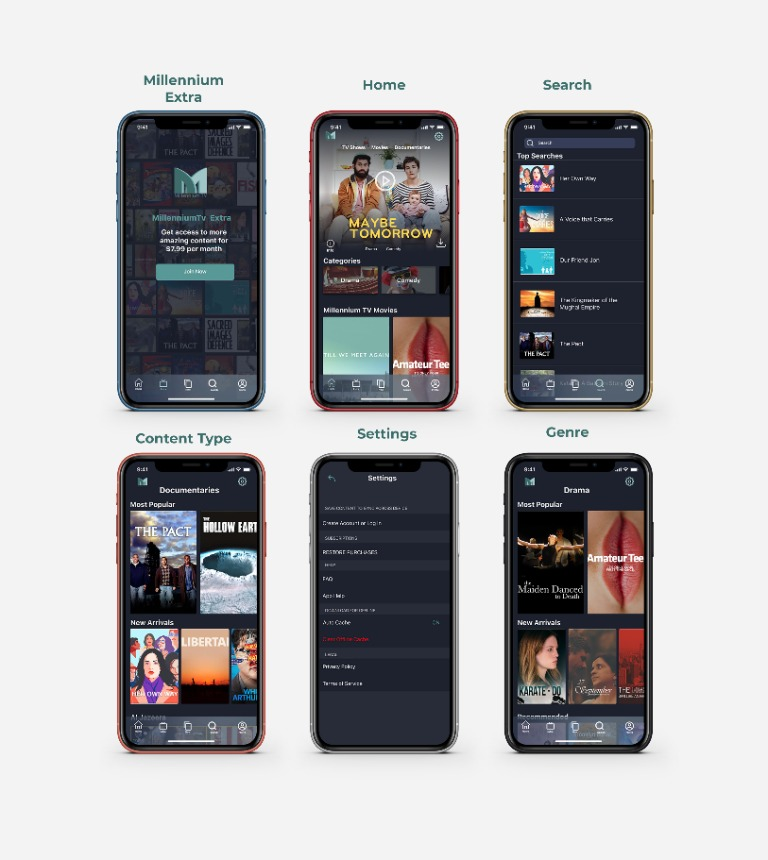
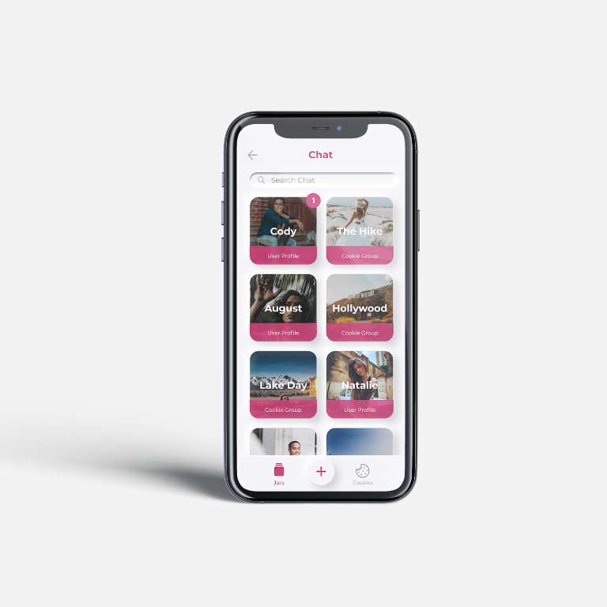
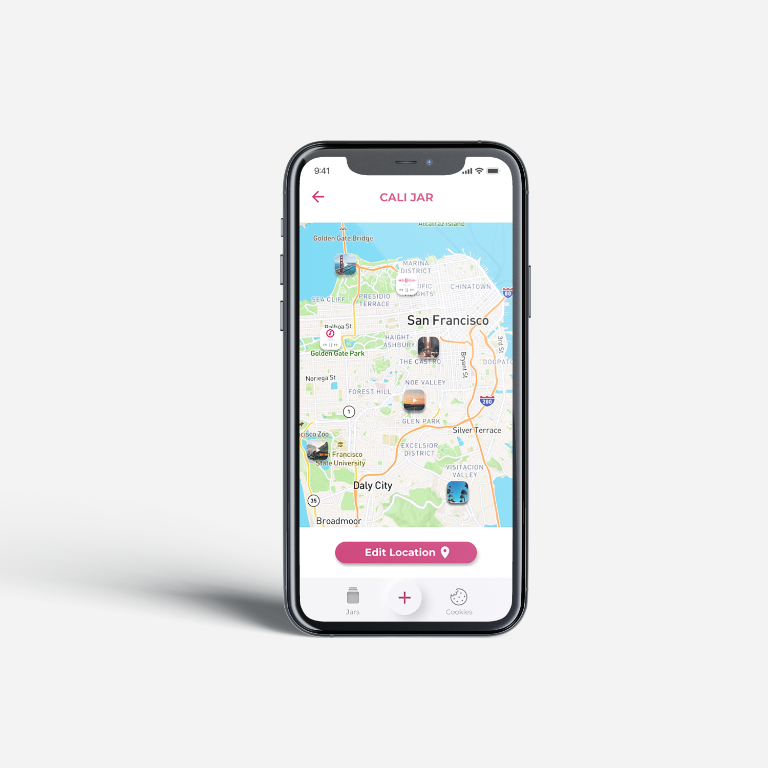
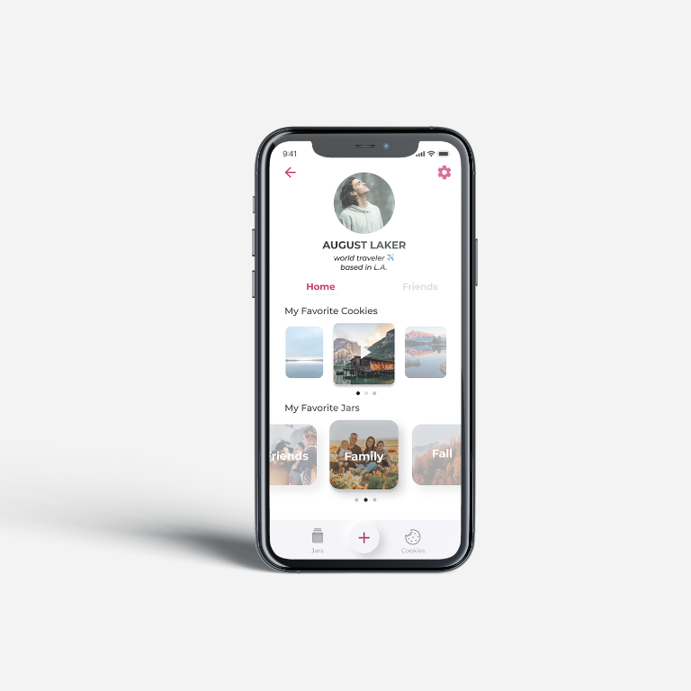

Solving real UX problems with clarity, speed, and iteration.
These projects represent small-to-medium engagements where I made targeted design improvements in tight timelines, balancing stakeholder needs, user pain points, and fast delivery.
01 · Product UX and brand engagement
Millennium TV Redesign
Improving usability and visibility for a UK-based platform amplifying diverse voices.
Millennium TV is a UK streaming platform endorsed by Al Jazeera. It showcases independent films and stories from people of color, uplifting underrepresented creators and cultural narratives. I joined during a growth phase to support product UX and brand engagement.
My role
Audited the mobile experience and identified friction in content discovery.
Designed wireframes and mobile-first onboarding and browsing improvements.
Created Instagram content highlighting creators and cultural moments.
Supported brand storytelling and aligned platform visuals with campaign messaging.
Collaborated with stakeholders to attract awareness and partnerships.
Impact
Refined the app’s visual identity and flow during early development.
Recommended improvements to genre filtering, mobile hierarchy, and landing pages.
Boosted brand visibility through culturally aligned social design.
“You helped define our voice at a time when we needed clarity and consistency.”— CEO feedback
Original designs

Featured contentOriginal design

SettingsOriginal design
Redesign

Mobile browsing and discovery
02 · Product design / Social memory
Cookie Jar — Designing Moments That Matter
A social memory app where cookies are memories and jars are albums.
Cookie Jar helps people save personal memories, called cookies, inside themed albums, or jars. It offers a calm, emotionally driven alternative to traditional social media, with intentional memory-keeping supported by modular UI, clear creation and sharing flows, and a personal, warm, tactile visual language.
My role
I worked as a Product Designer, helping the team iterate quickly and define future-facing user experiences.
Streamlined login and onboarding for first-time access.
Designed the first chat home screen, which became a structural anchor for the app.
Tested core messaging and memory features with users.
Designed a map-based memory logging flow and a new profile page.
Proposed future features, modular UI updates, and refined product flows.
Visual design approach
In 2020, the team wanted the product to reflect the neumorphism trend. I used soft shadows, subtle depth, and a three-dimensional feel to bring warmth and tactility to the experience, balancing the brief with usability and accessibility.
My biggest win
The first chat home screen solved messaging discoverability, anchored the app’s navigation structure, and prompted a broader redesign based on clearer architecture.
Outcomes
Helped define the app’s core layout and feature logic.
Designs were used in internal stakeholder decks and fundraising demos.
Created a structured Figma system to support fast iteration and developer handoff.
“You helped us understand our product’s core structure.”— Team feedback
Key app screens

Chat homeFriends and group conversations

Memory mapAdding a location to a memory

Personal profileFavorite cookies and jars
Thanks for making it this far
You’ve reached the end of this page.
If you’d like to talk about a project, I’d love to hear from you.